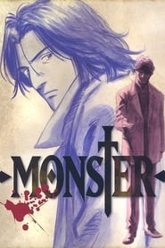

Monster
A trama gira em torno de Kenzo Tenma, um cirurgião japonês que vive na Alemanha cuja vida é abalada após se ver no caminho de Johan Liebert, um de seus ex-pacientes, que se revela um serial-killer psicótico.
- Gênero: Suspense
- Ano: 2004

KBest ©
A trama gira em torno de Kenzo Tenma, um cirurgião japonês que vive na Alemanha cuja vida é abalada após se ver no caminho de Johan Liebert, um de seus ex-pacientes, que se revela um serial-killer psicótico.